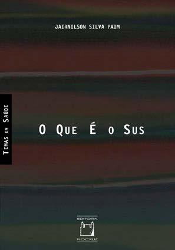

Módulo 4 | Aula 1
Papel e Importância da Comunicação em PIE
Tradução do Conhecimento e comunicação
Como você já viu, Tradução do Conhecimento envolve processos de síntese, adaptação, disseminação, intercâmbio e aplicação do conhecimento científico, considerando as necessidades dos diferentes públicos e os contextos em que as informações serão utilizadas. Isso significa que comunicar evidências não consiste apenas em divulgar resultados de pesquisas, mas também em desenvolver estratégias capazes de facilitar sua compreensão e uso.
Além disso, Tradução do Conhecimento pressupõe interação entre pesquisadores, gestores, profissionais, comunicadores e sociedade. Em vez de compreender a comunicação científica como um processo unidirecional, essa abordagem valoriza diálogo, troca de saberes e construção compartilhada de soluções para problemas sociais e de saúde.
Você sabia que no site do CIHR é possível encontrar materiais para aprofundar estudos sobre Tradução do Conhecimento? O conteúdo inclui:
- Definições conceituais.
- Modelos teóricos.
- Estratégias de comunicação.
- Exemplos de projetos.
- Recursos formativos.
- Documentos institucionais.
- Experiências de integração entre pesquisa e políticas públicas.
Também estão disponíveis conteúdos sobre:
- Síntese de evidências.
- Disseminação científica.
- Participação de usuários.
- Processos colaborativos de produção do conhecimento.
Na literatura também é possível encontrar o termo “Translação do Conhecimento”, utilizado como tradução da expressão em inglês knowledge translation. Embora os dois termos sejam empregados em diferentes contextos, “Tradução do Conhecimento” costuma ser mais associado a estratégias de comunicação, adaptação e compartilhamento das evidências para distintos públicos. Assim, esse debate também dialoga com referenciais críticos desenvolvidos no campo da Saúde Coletiva e da Comunicação e Saúde.
Pensar Tradução do Conhecimento de forma crítica significa reconhecer que evidências científicas são produzidas e utilizadas em realidades sociais, políticas e culturais específicas. Assim, comunicar evidências não deve ser entendido apenas como um processo técnico ou instrumental, mas também como uma prática relacionada ao direito à informação, à democratização do conhecimento e à participação social nas políticas públicas.
Para aprofundar sua compreensão sobre o contexto brasileiro da Saúde Coletiva e do Direito à Informação e à Comunicação consulte as referências a seguir.
ARAÚJO, I. S. de; CARDOSO, J. M. Comunicação e Saúde. Rio de Janeiro: Editora da Fiocruz, 2007.
STEVANIM, L. F.; MURTINHO, R. Direito à Comunicação e Saúde. Rio de Janeiro: Editora da Fiocruz, 2021.

PAIM, J. S. O que é o SUS. Rio de Janeiro: Editora da Fiocruz, 2009.